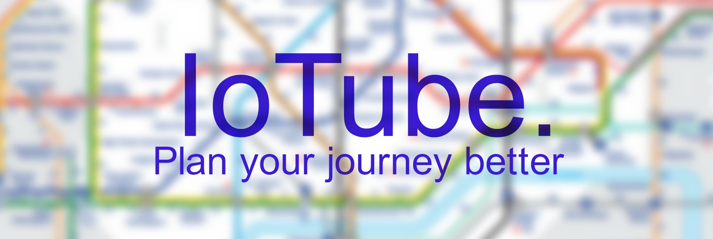

Your health is our priority.
See and compare the real-time temperature and pollution levels at your stations.
Anytime. Anywhere.
We Can Detect
Connecting Commuters and TfL Engineers
This system will help TfL Engineers better detect particular tube stations that require immediate attention and can also indicate congested and endangered tube routes if a mains gas or water pipe leaks into the tunnels or stations.